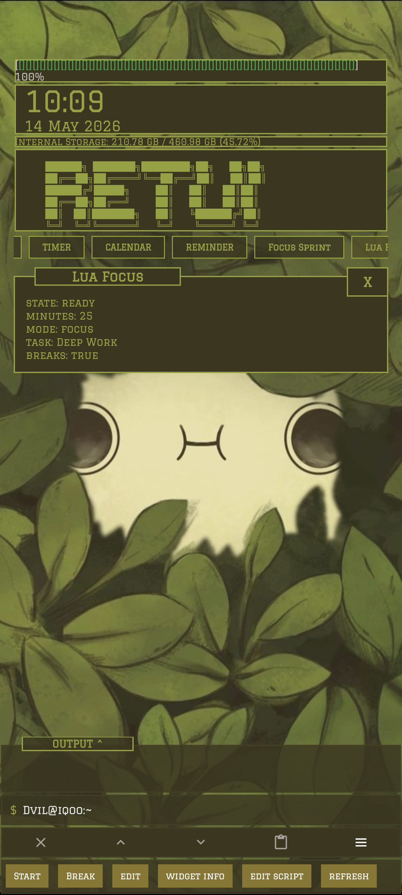

Re:T-UI
A terminal-styled home screen for people who want Android to feel like a small workstation: launch apps by typing, keep modules docked, script with Lua and Termux, and tune the interface from readable docs instead of hunting through hidden menus.
Choose the path that matches what you are trying to do.
The homepage now doubles as the wiki index. If you already know the command, jump to a reference. If you are evaluating the launcher, start with the product sections and screenshots.
New user
Learn the command-first basics, opening settings, and using help without blocking the terminal.
App control
Hide noisy apps, restore hidden apps, inspect packages, and build app drawer groups.
Modules and widgets
Use dock panels, native modules, Termux modules, and Lua widgets that feel built into the launcher.
Themes and presets
Work from wallpaper auto-color, save presets, browse marketplace looks, or submit a setup.
The launcher is the terminal, the dashboard, and the control surface.
These are real app screens from the current site assets. The point is not just retro styling; it is keeping daily phone operations inspectable and fast.


help turns the launcher into its own quick manual.

Documentation by job, not by folder structure.
The public site links polished HTML guides where they exist and repo wiki pages for deeper reference. The command pages remain command-first so they match how the launcher is actually used.
Start and command reference
Learn the base command vocabulary, launcher habits, and command categories.
Apps command
Open the drawer, hide apps, restore apps, set default app slots, and maintain app groups.
Panels and scripts
Use native modules, script modules, Lua widgets, suggestion chips, and widget config surfaces.
Customize the workstation
Use the settings hub, editable XML files, wallpaper auto-color, presets, and shareable looks.
Integrations
Route non-interactive scripts through Termux and keep automation narrow, explicit, and inspectable.
Small command vocabulary, large surface area.
These commands are now linked as wiki entry points rather than isolated examples.
List commands and open focused help for a command.
Open the terminal-style settings hub.
Open the new Apps command guide.
Open the app drawer or list visible apps.
Inspect native and custom modules.
Create a launcher-native Lua widget.
Print the Termux dispatch checklist.
Derive a theme palette from wallpaper.
Save a stable theme snapshot.
Open Android notification access setup.
Choose the install path that matches your comfort level.
The Play Store build is the simplest supported install and update path. GitHub releases remain available for users who prefer direct APK installation or cannot use Play Store.
Play Store
Best for normal installs, automatic updates, and supporting continued development.
Open Play StoreGitHub APK
Direct download for testers, power users, and anyone who wants the free APK channel.
Download APKRelease boundary: Play Store and GitHub artifacts are separate. Use the Play Store channel for the easiest consumer path, and GitHub when you intentionally want direct release assets.
Browse, create, and share terminal looks.
Presets are the bridge between product showcase and user documentation: they show what the launcher can look like and teach the exact flow for sharing a setup.
Browse presets
Open the gallery to inspect approved screenshots, compatibility notes, and downloads.
View galleryCreate ASCII wallpaper
Use ASCII Lab to turn a source image into terminal-style text, PNG, or SVG output.
Open ASCII LabOpen development, practical reports.
Useful feedback includes the command used, visible output, Android version, build channel, and whether the issue affects Play Store, GitHub, or a local debug install.
$ help $ apps -tutorial $ module -ls $ widget -ls $ termux -setup $ debug -settings $ refresh